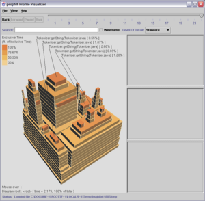

prophIt is an innovative new way to visualize and understand profiler data. The primary visual paradigm used by most profiler user interfaces (UIs) is the tree view. A tree view is used to display the program's call graph, with child nodes in the tree view representing callee functions. Most of the screen real estate is taken up by text and whitespace; very little data is presented to the user and it is very hard to mine the potentially rich profiler data for useful nuggets of information.To improve on the tree view, prophIt makes the data primary, and the text and labels secondary. The prophIt user interface uses a dense, color-coded, 3-dimensional tower diagram to present much more information on the screen than the traditional tree view. Instead of cluttering the screen, labels and numbers are placed out of the way of the data and are made available on demand. prophIt enables you to use your powers of visual observation and image analysis to find important features of your profile, then provides you with the data you need to improve your programs.
- The Tower Diagram
- Navigation Buttons
- Searching
- Call Tables
- Level of Detail
- Intelligent Labeling
- Focus on Selection
- Wireframe
The operation of all computer programs can be represented as a call graph. Consider a simple database test program which has the following methods:
Suppose that the call graph for this program looks like the following:
main: the entry point of the programinit: initializes the database with some standard template datatest: function which implements the testsDBExec: function which parses and executes a SQL statementinsert: inserts a table rowupdate: updates the data in a table rowwrite: writes the data to the data store (memory or hard disk)

The numbers in parentheses are used to identify different invocations of the same function. For instance,
DBExecis invoked frominitand fromtest.Each of these function invocations takes a certain amount of CPU time. This CPU time is what profilers typically measure, one way or another. (See here for an quick read on different profiling techniques).
Most profiler user interfaces look very similar. The primary display is a tree view that looks a lot like the diagram above. Each function call is represented as a node in the tree, and the amount of time spent in each function is typically written next to the name of the function. The number of invocations of that function may also be shown. There is also often a secondary tree view which shows 'hotspots'. A hot spot is a function in which the program spent a lot of time. In our database example,
writeis probably a hotspot. The hotspot display is typically a listing of the program hotspots, as best the profile visualizer can determine them, with the callers of each hotspot drawn in a tree that is essentially an inverted view of the call graph.Problems With The 'Tree View' Approach
What's wrong with the tree view approach to profile visualization?
- Display density. A typical profile consists of hundreds or even thousands of functions, each of which may be called from many different places in the program, and each of which has its own associated CPU time and number of invocations. Yet, in the tree view approach, most of the screen real estate is occupied by text (the function names and times) and empty space. Only a small fraction of the program can be seen at once, and the most interesting data (the CPU times) are represented as text rather than as a diagram. The human eye and brain are very good at assimilating large amounts of information presented visually, if it is presented in a powerful way. The information density of the 'tree view' GUI is very low.
- Cluttering of the data by labels. For the purposes of optimizing a program, the names of the functions are not important until the performance-critical aspects of the program have been identified. Yet in a tree view profiler, the timing data is obscured by copious amounts of text.
- Inflexbility. The simple top-down call graph and bottom-up hotspot views of the data are all that is available. Many performance problems do not normally show up in these 2 views. Yet there is no mechanism for mining the data for other, more subtle problems.
prophIt re-invents the visual display of profiler data using innovative and powerful new views of profiler data. By focusing on the data, rather than text, prophIt is able to present much more information to the user than a tree view display does.
The Tower Diagram
The goal of the prophIt user interface is to present as much relevant data as possible, while displaying labels and numbers on demand. The 'tower diagram', shown below in the context of the prophIt application, replaces the tree view as the fundamental display paradigm.
The tower diagram has the following characteristics:
- Each block represents a function call in the context of its caller. The area of the block is proportional to its inclusive time.
- The block with the white highlight is the 'selected function'. Blocks with yellow highlights are other invocations of the same function.
- The selected function is selected by single-clicking on it with the mouse
- The tables on the right hand side of prophIt show detailed information about the selected function.
- All the callee functions of the selected function are rendered as blocks stacked on top of it. Since the area of each block is proportional to its inclusive time, and the sum of the inclusive times of all a functions callees cannot be greater than the inclusive time of the function itself, the callee blocks always fit within the area of their caller.
- The entire diagram can be rotated by clicking-and-dragging on the diagram.
- The slider bar at the top of prophIt shows the maximum call depth which is displayed in the diagram. In the example above, functions up to 14 calls deep are being displayed.
- As you navigate around the tower diagram, the depth slider adjusts automatically for the maximum call depth.
- The text at the bottom shows information about the function which is at the base of the diagram
- To re-draw the diagram with a different function as the base, double-click on that function's block in the diagram.
Navigation Buttons
The buttons at the top of the application are all used to change the diagram root of the tower diagram. The callees of the root of the call graph may represent functions called by
main, or other threads.
- Back
- Similar to a Back button in a web browser. Returns the diagram root back to its previous value.
- Forward
- Similar to a Forward button in a web browser. Un-does the effect of using the Back button. Disabled if the Back button has not been used.
- Parent
- Sets the diagram root to the caller of the current diagram root. Repeatedly pushing the 'Parent' button shows more and more of the program's call graph.
- Root
- Pushing this button shows the entire call graph. This is the same view that appeared when the profile was first opened in prophIt.
Searching
The Search bar, located above the tower diagram, provides a fast and flexible way to locate function calls.
The Search bar can be used to search for partial or complete function names. It accepts the characters:
Character Behavior Examples Java package and function name characters Matches the specific string of characters occuring anywhere in a function name toString matches any
toStringfunction on any classString.<init> matches
java.lang.String.<init>andmypackage.String.<init>* Matches any number of characters in the function name String*.<init> matches String.<init>andStringBuffer.<init>? Matches any one character in the function name MyClass.?et matches MyClass.setandMyClass.getFunctions which match the Search text are highlighted in the tower diagram. Rotate the diagram by clicking and dragging in order to see all the Search matches.
Call Tables
To the right of the Tower Diagram are the Call Tables. The call tables are used to show a detailed view of the selected call. Pause the mouse over any function name text to see a tool tip with the complete function name.
The top table shows detailed information about the selected call itself. Specifically:
- The name of the function and its Java class.
- The inclusive time of all occurrances of the function in the current tower diagram.
- A function has multiple occurances when it is called in more than one place in the program
- The exclusive time of all occurrances of the function in the current tower diagram.
- The sum of the number of invocations of all occurrances of the function in the current tower diagram
The caller table shows:
- The name of each caller of the selected function which is visible in the current tower diagram.
- The percentage of inclusive time that was spent as a callee of the caller.
The callee table shows:
- The name of each callee of the selected function which is visible in the current tower diagram.
- For each callee, the percentage of the total inclusive time for all callees that was spent in that callee. For example, suppose a function
maintakes 100 seconds. 30 seconds are spent ininit, and 20 seconds are spent intest. The remaining 50 seconds are spent inmainitself. The inclusive time ofmainis 100 seconds, the exclusive time is 50 seconds. 60% (30 / ( 20 + 30 )) of the total inclusive time of all callees was spent ininit. The remaining 40% was spent intest.Level of Detail
You can control the amount of detail displayed in the tower diagram using the Level of Detail control. If your program is very large, or if you just want to get a rough idea of the overall profile, lowering the Level of Detail will reduce the amount of information shown on the screen, and improve the performance of the display. When the level of detail is reduced, methods which take up a small amount of CPU time are removed from the tower diagram. To show all the detail that is available in the data file, set the Level of Detail to 'Very Fine'.
Intelligent Labeling
The typical capacity of person's short-term memory is 7 items. Without labels, keeping track of which blocks in the tower diagram correspond to which methods can become unmanagable. The tower diagram UI helps to solve this problem by intelligently labeling certain blocks.
Currently, 5 prominent blocks are labeled in the blank space above the tower diagram. The block which is under the mouse pointer is labeled at the bottom of the diagram.
Focus on Selection
You will frequently identify a particular method which is called from many places in the program and takes up a lot of CPU time. The 'Focus on Selection' feature can help you figure out all the different ways a method is being used in your program.Once you have selected a method block, select the 'View/Focus on Selection' menu item. The diagram is re-oriented to focus that method and its callers. This helps identify situations where a method is being called too often (for example, re-searching a data structure for an element each time through a loop, rather than caching the value before the loop). By navigating up and down through the diagram you can get a clear picture of all the different contexts in which the method is used, and how the program time is divided among all the different usages.
Normally, the blocks in the tower diagram are rendered as solid blocks. While the diagram is being rotated, the blocks are rendered in wireframe for better performance.
Wireframe mode is also used after you use the Search bar so that you can easily see all the search results throughout the entire diagram.
Blocks which are search results or instances of the selected method are rendered as solid blocks so that they can be clearly seen. You can enable or disable Wireframe mode manually at any time using the Wireframe checkbox.
Of course we're planning on new and better features to incorporate into prophIt. Check out what's on our minds for the future.